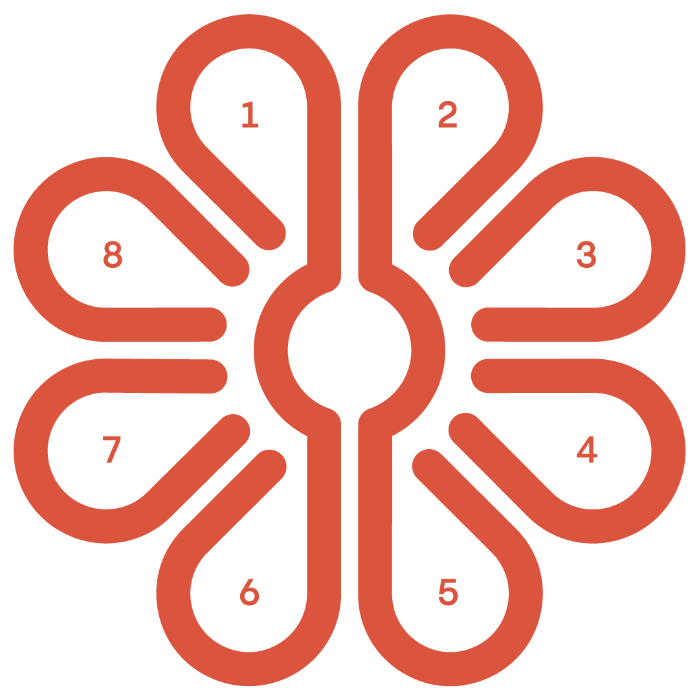
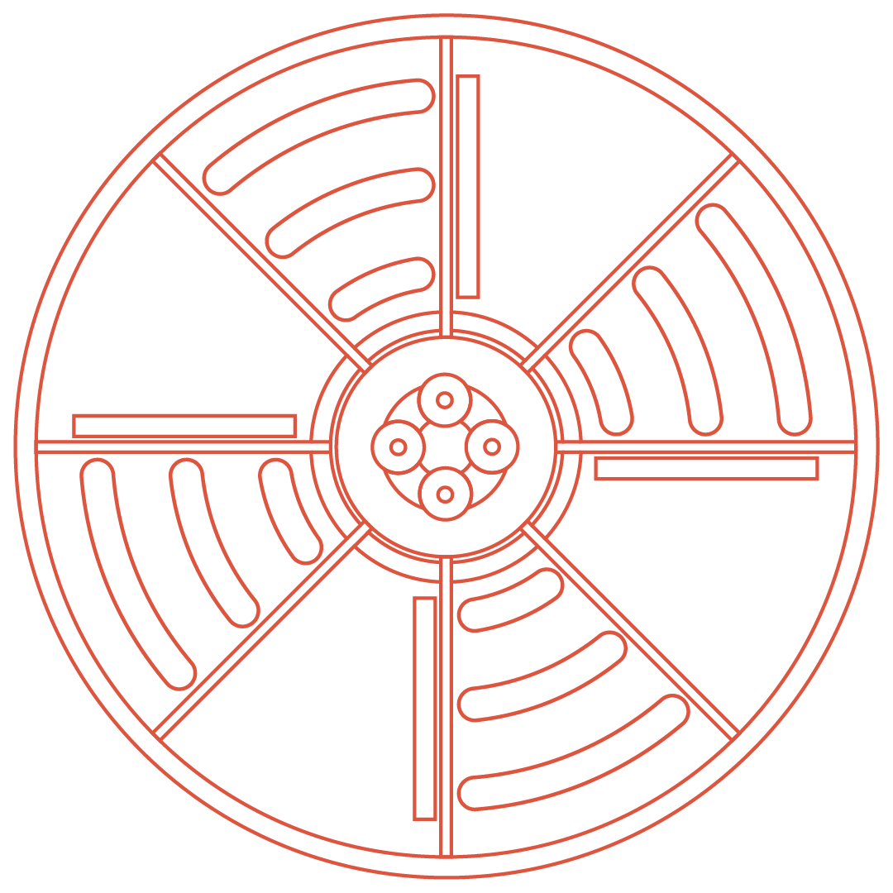
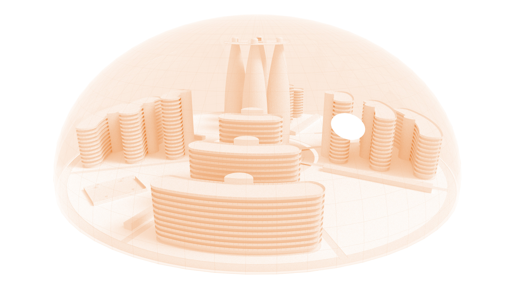

Acidalia is one of the first Martian cities to be built and inhabited, and the first independent city on Mars not tied to any Earth nation or government. Which means that when you arrive, you will officially become an Acidalian citizen. In many ways, Acidalia is a lot like many newly built cities on earth, but it is also very different. We put a great deal of effort into ensuring Acidalia is one of the most liveable cities in the galaxy, it is completely different to the early Martian cities you may have heard about. Because of the large dome that shelters Acidalia, we are able to have rivers, green grass, trees, which means our food is grown here too. We have all the comforts of Earth and more; building our city from a blank canvas allowed us to think far into the future for a city that avoids the mistakes that we made before in our Earthly cities.
The flag of acidalia
Our Acidalian flag. Front and centre is the symbol that represents Acidalia's 8 districts and is found all throughout the city. Behind is the orange Martian landscape and sky. In the top left corner is a reminder of where we all come from, a small representation of a blue and green Earth.
8 districts

The city is divided into 8 districts plus the central area. Districts 1, 3, 5 and 7 are the primary living districts, with the others for leisure and entertainment. Around the city you will see these flower-like symbols everywhere that represent the Acidalia city layout, and you will be able to find where you are going using this symbol as the map for the city.
The dome

While Mars is still undergoing the terraformation process, Acidalia is protected from all the harsh elements by the outer dome (don't worry, we are able to make artificial weather in Acidalia just for fun). The dome towers over 120M high, yet you can barely even notice it's there. It took our engineers over 10 years just to plan the structure of the dome!